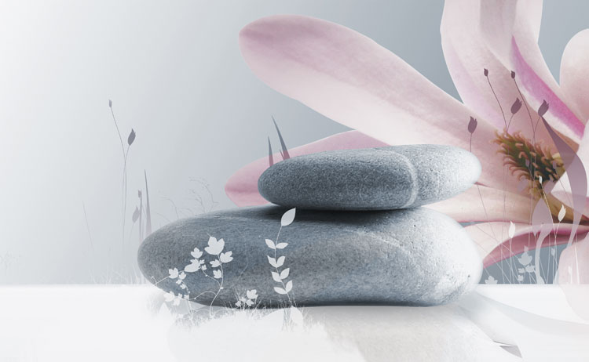

Developpement Personnel

Il est difficile de définir le développement
personnel de façon claire et simple mais il est
possible de le définir comme une démarche
globale de réflexion sur soi et de valorisation
de son potentiel dans le but d’améliorer la
qualité de sa vie et de réaliser ses aspirations
profondes.
 Il peut toucher différents aspects de la
vie : professionnel, personnel, spirituel,
financier, relationnel, familial.
Professionnel : maintenir une
attitude positive afin d’être dans
l’évolution et la progression continuellement.
Il peut toucher différents aspects de la
vie : professionnel, personnel, spirituel,
financier, relationnel, familial.
Professionnel : maintenir une
attitude positive afin d’être dans
l’évolution et la progression continuellement.